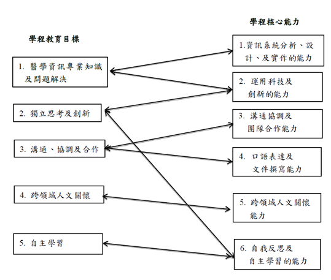

學程宗旨與特色
整合理工學院內電機系、資工系、數學系的資源與師資，也跨院連接醫學院的醫學系與公衛系及管理學院資管系的專業知識與資源。本校已於2017年完成輔仁大學附設醫院，可與本學程互補並使雙方互利。學生、學程和醫院(企業)結合，是未來市場趨勢。醫院本身即是一個企業，學生在醫院實習，也是產學合作中心。本學程教學特色包含大三的專業實務專題，與大四下整學期的產業實習，並配合相關教學醫院及醫療資訊企業醫療資訊人才需求。
核心能力
| 主要課程能力 | 內涵說明 |
|---|---|
| 醫院實務之基礎 | 關於醫療診斷的知識與醫院資訊系統之實務。 |
| 資訊工程之基礎 | 規劃程式架構，做為實務系統開發之準備。 |
| 創新應用 | 運用醫療背景與資訊工程的技術，以實務為導向、完成跨領域的創新應用。 |
課程規劃
Java程式設計、微積分、計算機概論、機率與統計、資料結構、演算法、資料庫概論、物件導向分析與設計、醫學資訊概論、醫療標準及術語、電子病歷、醫療資訊系統實務、醫療決策分析、醫學影像系統、醫療設備與介面、Web基本原理與技術、行動裝置程式設計、智慧穿戴技術與應用、網路概論、行動醫療與創新應用專題、智慧醫院與創新應用專題、雲端健康照護專題、產業實習。
